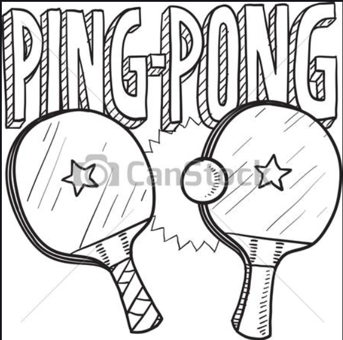

AI Ping Pong

- First keep your laptop screen straight.
- Move yourself approximately 3-4 feet away from the laptop.
- To play scroll down
- Move your right wrist in an ascending and descending manner, a multicoloured dot should appear on your right wrist.
- Now press the play button, and again move yourself 3-4 feet away from the laptop.
- The red paddel is your paddel, that will move as per the movement of your right wrist.